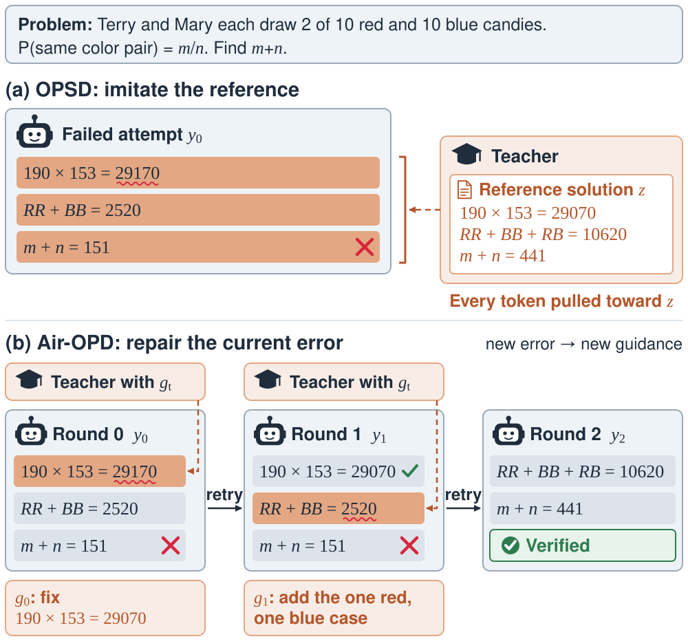
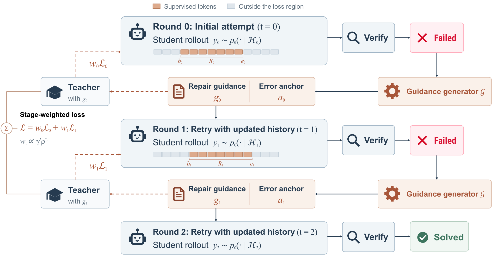
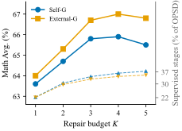
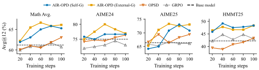

Reference-conditioned On-Policy Self-Distillation (OPSD) conditions the teacher on a static full reference solution $z$ and supervises every token of a failed attempt—specifying the destination, but not how to transition from the student's current error toward a valid repair. We introduce AIR-OPD, which synthesizes error-anchored repair guidance across up to $K$ adaptive retry rounds, supervises only the error-aligned repair region $R_t$ where the guided teacher expresses positive corrective mass, and combines rounds via outcome-aware stage weighting. 传统的参考解条件化在策略自蒸馏（OPSD）将完整静态参考解 $z$ 输入给教师并对失败轨迹的每个 Token 进行全量监督——它只告诉模型“最终答案在哪”，却没有教会学生“如何从当前错误状态过渡到正确推理路径”（即参考解条件化捷径风险）。我们提出 AIR-OPD：针对学生最新暴露的错误锚点动态合成无答案修复指导（最多 $K$ 轮重试），仅在教师提供正向纠错概率质量的错误对齐修复区间 $R_t$ 上执行蒸馏，并通过结果感知阶段加权融合多轮监督。
AIR-OPD (Self-G) uses the student policy itself to diagnose & guide repairs, already gaining +2.7 / +2.2 pts over OPSD (4B / 8B) without any external model.
Self-G 直接用学生自身策略生成修复指导，无需任何外部教师即可取得 +2.7 / +2.2 分 的显著跃升。
In post-training for reasoning, RLVR (e.g., GRPO) gives only a single scalar outcome reward per trajectory, while OPSD conditions a frozen teacher on the complete reference solution $z$ and forces the student to match the teacher on every token of its rollout. Neither teaches the student how to diagnose and repair its own evolving mistakes. 在推理后训练中，可验证奖励强化学习 (RLVR/GRPO) 对整条轨迹仅提供一个标量结果信号；而在策略自蒸馏 (OPSD) 将完整参考解 $z$ 塞给教师，并强迫学生在自身生成轨迹的每一个 Token 上逼近教师分布。这两者都未能显式教会学生如何从当前局部错误状态过渡到正确推理路径。
Samples $G=8$ rollouts per prompt and assigns a uniform trajectory-level advantage based on final answer verification $V(y) \in \{0,1\}$. 每个问题采样 $G=8$ 条轨迹，仅根据最终答案是否正确赋予整条序列统一的标量优势（Outcome Reward）。
Teacher observes static full solution $z$ and supervises all $|y|$ tokens of every rollout—even when $y$ is already correct or diverges along a different valid approach. 教师读取完整静态参考解 $z$，对学生轨迹的全部 $|y|$ 个 Token 计算 KL 散度——无论该轨迹原本已做对，还是采用了不同于参考解的思路。
Leaves already-correct rollouts untouched! On failed rollouts, synthesizes targeted repair guidance $g_t$ for the earliest flaw $a_t$ and supervises only the corrective span $R_t = y_t[b_t:e_t]$. 对已做对的轨迹零干预！仅针对失败轨迹定位首个致错锚点 $a_t$ 并合成无答案指导 $g_t$，仅在纠错区间 $R_t = y_t[b_t:e_t]$ 上执行特权蒸馏。

AIR-OPD makes explicit the error-extraction step that OPSD leaves implicit inside the teacher. Only the guidance generator $\mathcal{G}$ reads the reference solution $z$; both the frozen teacher $p_{\mathrm{T}}$ and the retrying student receive only the concise, answer-free repair guidance $g_t$. AIR-OPD 将 OPSD 隐含在教师内部的“错误诊断与信息提取”显式拆解出来：只有指导生成器 $\mathcal{G}$ 能看到参考解 $z$，而冻结教师 $p_{\mathrm{T}}$ 和重试学生都只接收紧凑且不含最终答案的修复指导 $g_t$。

For failed rollout $y_t$, generator $\mathcal{G}$ diagnoses the earliest causal error against reference $z$: 对验证失败的回复 $y_t$，生成器 $\mathcal{G}$ 比对参考解 $z$ 诊断最早的致错步骤：
Self-G (student itself) or External-G (Qwen3.5-27B).Starts at exact match $b_t$ of anchor $a_t$. Measures positive teacher–student corrective mass at token $j$: 起点 $b_t$ 由锚点 $a_t$ 精确匹配定位；终点 $e_t$ 由教师对替代 Token 的正向纠错概率质量决定：
Zero extra forward passes: $C_{t,j}$ reuses logits already computed for the KL loss! 零额外算力开销：$C_{t,j}$ 直接复用计算 KL 损失时已有的教师与学生分布！
Normalizes weights across each trajectory's $T_n+1$ stages by depth $t$ and immediate retry verification $s_{n,t} = \mathbb{I}[V(y_{n,t+1})=1]$: 结合阶段深度衰减 $\gamma^t$ 与紧随其后的重试验证奖励 $\rho^{s_{n,t}}$ 对单条轨迹做归一化加权：
Unit total weight per trajectory prevents multi-round failures from dominating gradients. 每条轨迹总权重恒为 1，既防止多轮长轨迹主导梯度，又奖励真正促成修复成功的关键轮次。
Why not supervise the whole failed response, or only the single paragraph containing the error? Toggle the supervision strategy or adjust the tail tolerance $\epsilon$ below to see how block-level corrective mass $C_{t,j}$ captures both the anchored error and its immediate downstream consequences while filtering out noisy tail tokens. 为什么不能直接监督整条失败回复，或者只监督报错的那一个段落？请切换下方的监督策略或调节尾部容忍度阈值 $\epsilon$，观察各推理块的正向纠错质量 $C_{t,j}$ 如何精准覆盖“致错锚点 + 紧邻的可恢复推导区”，同时过滤掉尾部无关噪声。
Note: per-block corrective-mass values in this sandbox are illustrative (not measured) and only demonstrate the endpoint rule; the Math Avg. numbers on the buttons are the measured ablation results. 说明：沙盒中各推理块的纠错质量数值为示意值（非实测），仅用于演示终点选择规则；按钮上的 Math Avg. 为论文实测消融结果。
Click through the 3 stages below (Appendix C.1 / Figure 1b) to see why a single static correction is often not enough: fixing an early arithmetic slip in Round 0 unmasks a deeper combinatorics omission in Round 1, which Round 2 then resolves. 点击下方三个阶段（对应论文附录 C.1 与图 1b），直观了解为什么单次静态纠正往往不够：第 0 轮修复分母乘法笔误后，第 1 轮在策略重试暴露出深层的“分类讨论漏算”，随后第 2 轮精准补齐第三类情况并验证通过。
Because a retry can fail even when its guidance successfully repaired the anchored error (as in Round 0 above!), AIR-OPD does not penalize failed retries—instead, it combines a gentle temporal decay $\gamma^t$ with an outcome bonus $\rho^{s_{n,t}}$ for stages whose immediate retry passes verification. 正如上方第 0 轮所示，即使指导成功修复了当前锚点错误，重试仍可能因后续隐患而未通过验证。因此 AIR-OPD 不会惩罚失败重试，而是将深度衰减因子 $\gamma^t$ 与“紧随重试通过验证”的奖励因子 $\rho^{s_{n,t}}$ 相结合。
Select a preset from Table 2 or adjust $(\gamma, \rho)$ and retry outcomes $(s_0, s_1, s_2)$ to inspect how unit trajectory weight is distributed across repair stages:
Trained for 100 optimizer steps on DAPO-Math-17K (15,650 verified problems) with rank-64 LoRA on 8×H100 GPUs. No repair guidance is used at evaluation time; all methods share identical inference settings (Avg@12 on AIME24/AIME25/HMMT25 at temp 1.0, max 38,912 tokens; Avg@4 on MMLU-Pro & GPQA Diamond). 在 DAPO-Math-17K（15,650 道经验证竞赛题）上使用 rank-64 LoRA 训练 100 步（GRPO 为 500 步×8 rollouts）。评测阶段完全不提供任何修复指导，所有方法采用完全一致的采样配置（数学竞赛汇报 Avg@12，分布外基准汇报 Avg@4）。
| Method / Scale | AIME24 (Avg@12) | AIME25 (Avg@12) | HMMT25 (Avg@12) | Math Avg. (%) | Δ vs. OPSD | MMLU-Pro | GPQA Diamond | OOD Avg. (%) | Δ vs. Base OOD |
|---|---|---|---|---|---|---|---|---|---|
| Qwen3-4B Backbone (100 Optimizer Steps; GRPO: 500 Steps × 8 Rollouts) | |||||||||
| Base Model (Qwen3-4B) | 75.0 | 66.4 | 42.2 | 61.2 | -1.9 | 51.5 | 62.9 | 57.2 | Ref (0.0) |
| SFT (Offline Reference Imitation) | 70.6 | 61.4 | 42.8 | 58.2 | -4.9 | 43.1 | 52.0 | 47.6 | -9.6 (Severe Forgetting) |
| GRPO (Outcome-Reward RLVR) | 75.6 | 67.5 | 43.9 | 62.3 | -0.8 | 51.3 | 62.4 | 56.8 | -0.4 |
| OPSD (Full-Response Ref-Conditioned) | 76.4 | 69.4 | 43.3 | 63.1 | Ref (0.0) | 50.4 | 60.2 | 55.3 | -1.9 |
| AIR-OPD (Self-G) · Student as Generator | 76.7 | 73.1 | 47.8 | 65.8 | +2.7 | 52.5 | 61.4 | 56.9 | -0.3 (Preserved) |
| AIR-OPD (External-G) · Qwen3.5-27B Generator | 80.0 | 73.3 | 46.7 | 66.7 | +3.6 | 51.7 | 61.9 | 56.8 | -0.4 (Preserved) |
| Qwen3-8B Backbone (100 Optimizer Steps; GRPO: 500 Steps × 8 Rollouts) | |||||||||
| Base Model (Qwen3-8B) | 75.8 | 65.6 | 43.9 | 61.8 | -2.9 | 57.9 | 64.1 | 61.0 | Ref (0.0) |
| SFT (Offline Reference Imitation) | 75.3 | 63.6 | 43.6 | 60.8 | -3.9 | 46.5 | 55.8 | 51.2 | -9.8 (Severe Forgetting) |
| GRPO (Outcome-Reward RLVR) | 76.9 | 69.2 | 45.8 | 64.0 | -0.7 | 56.6 | 64.5 | 60.6 | -0.4 |
| OPSD (Full-Response Ref-Conditioned) | 77.8 | 69.7 | 46.7 | 64.7 | Ref (0.0) | 57.4 | 61.7 | 59.6 | -1.4 |
| AIR-OPD (Self-G) · Student as Generator | 78.3 | 72.5 | 49.7 | 66.9 | +2.2 | 58.3 | 63.5 | 60.9 | -0.1 (Preserved) |
| AIR-OPD (External-G) · Qwen3.5-27B Generator | 79.7 | 73.1 | 49.4 | 67.4 | +2.7 | 58.0 | 64.1 | 61.1 | +0.1 (Zero Loss!) |
Compare Math Avg. across model scales: Qwen3-4B trained with AIR-OPD surpasses every Qwen3-8B baseline!
Why does SFT lose 9.6–9.8 OOD points and OPSD lose 1.4–1.9 points, while AIR-OPD keeps OOD within 0.1–0.4 points of the base model and even improves MMLU-Pro (51.5 → 52.5 at 4B, 57.9 → 58.3 at 8B)?
| Ablation Setting (Qwen3-4B, Self-G) | Math Avg. (%) | Δ vs. AIR-OPD |
|---|---|---|
| AIR-OPD (Full Default: Error-Aligned R_t + γ=0.8, ρ=1.5) | 65.8 | — |
| 1. Does simply filtering for failed rollouts explain the gain? | ||
| Standard OPSD (All rollouts, full reference $z$) | 63.1 | -2.7 |
| Failure-Only OPSD (Failed rollouts only, full reference $z$) | 62.5 | -3.3 (Worse than standard OPSD!) |
| 2. Supervision Region $R_t = y_t[b_t:e_t]$ Ablations | ||
| w/o Error Alignment (Supervise full failed response under $g_t$) | 64.7 | -1.1 |
| Error Block Only (Stop at first blank-line boundary after $b_t$) | 64.2 | -1.6 |
| 3. Outcome-Aware Stage Weighting $(\gamma, \rho)$ Ablations | ||
| Uniform Weighting $(\gamma=1.0, \rho=1.0)$ | 65.0 | -0.8 |
| Temporal Factor Only $(\gamma=0.8, \rho=1.0)$ | 65.4 | -0.4 |
| Outcome Bonus Only $(\gamma=1.0, \rho=1.5)$ | 65.4 | -0.4 |
62.5%), trailing AIR-OPD by 3.3 points. Thus, AIR-OPD's gains come from how it supervises each failure (error-specific guidance $g_t$ + span alignment $R_t$), not from skipping correct rollouts.
64.7%) dilutes the gradient with prefix/tail tokens unrelated to $g_t$, while stopping at the first error block (64.2%) misses downstream steps where the teacher still expresses corrective mass $C_{t,j}$.
65.0% to 65.4%, and combining both reaches 65.8%.

| Budget $K$ | Self-G Math Avg. | External-G Math Avg. | Self-G Stages (% OPSD) | Ext-G Stages (% OPSD) |
|---|---|---|---|---|
| K = 1 (Single Round) | 63.6% (+1.1 vs Fail-OPSD) | 64.0% (+1.5 vs Fail-OPSD) | 711 (22.2%) | 711 (22.2%) |
| K = 2 | 64.7% | 65.3% | 976 (30.5%) | 949 (29.7%) |
| K = 3 (Default) | 65.8% | 66.7% | 1,097 (34.3%) | 1,051 (32.8%) |
| K = 4 | 65.9% (+0.1) | 67.0% (+0.3) | 1,161 (36.3%) | 1,100 (34.4%) |
| K = 5 | 65.5% (-0.4 vs K=4) | 66.8% (-0.2 vs K=4) | 1,198 (37.4%) | 1,126 (35.2%) |
⚠️ Supervised-stage counts: Self-G K = 1–3 are measured; K = 4–5 and all External-G counts are extrapolated estimates (as in the paper's figure data). Math Avg. values are as reported.
63.6% / 64.0% vs 63.1%): At $K=1$ every trajectory has at most 1 stage, proving that error-aligned guidance $g_0$ is intrinsically more informative than full reference $z$.
63.1%) by Step 40 (63.1% Self-G, 65.5% External-G).
| Benchmark / Method | Base (Step 0) | Step 20 | Step 40 | Step 60 | Step 80 | Step 100 |
|---|---|---|---|---|---|---|
| Three-Benchmark Math Avg. (%) — Qwen3-4B | ||||||
| AIR-OPD (External-G) | 61.2 | 62.2 | 65.5 (Beats 100-step OPSD!) | 66.7 | 65.8 | 66.1 |
| AIR-OPD (Self-G) | 61.2 | 61.9 | 63.1 (Matches 100-step OPSD!) | 65.0 | 65.8 | 65.3 |
| OPSD | 61.2 | 60.1 | 61.0 | 60.6 | 61.9 | 63.1 |
| GRPO | 61.2 | 60.0 | 60.8 | 60.8 | 61.8 | 60.7 (Table 1: 62.3 after 500 steps) |
Values are three-benchmark means computed from the Figure 4 checkpoint data. Table 1 reports a selected checkpoint per run (it matches Step 80 for Self-G and Step 60 for External-G), so the Step-100 column here can be lower than Table 1.
@article{li2026learning,
title = {Learning from Evolving Errors: Adaptive Iterative Repair for On-Policy Distillation},
author = {Li, Rui and He, Liyang and Zhang, Zheng and Huang, Zhenya and Zhu, Linbo and Liu, Qi},
journal = {arXiv preprint arXiv:2610.02700},
year = {2026}
}